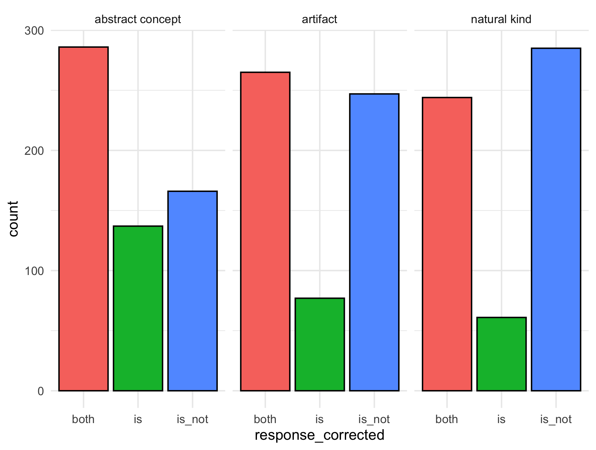
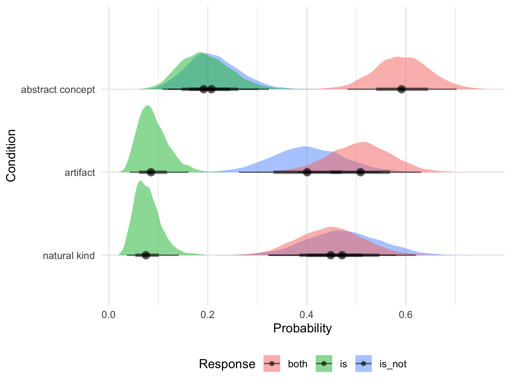
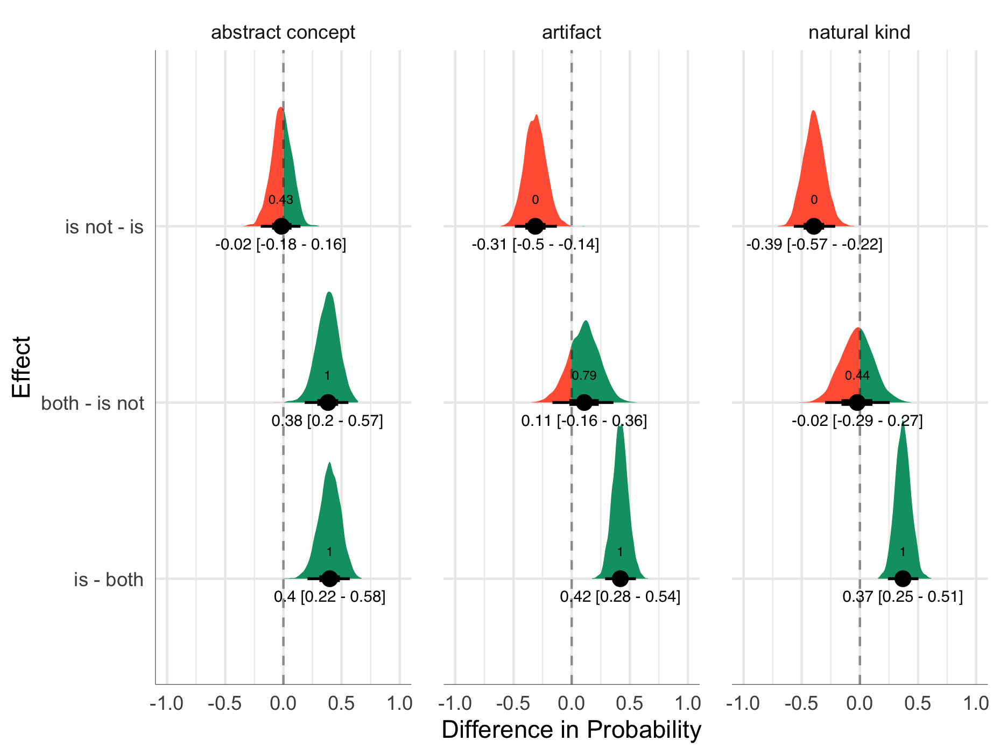

Three choice experiment
Statistical Analysis
Since we have an unordered factor as an outcome variable with more than 2 levels, I ran a Bayesian multinomial logistic regression using the brms package in R (Bürkner 2017) The outcome of this model was the probability of choosing “both”, “is” or “is not”. The sole fixed effect predictor included was “kind” (6 levels: natural kind, abstract concept, artifact, control precise definition, control subjective adjective and control check). The model also included random intercepts for participant and what is labeled “spec” in the data.
The models both included the default brms priors - Student’s T distribution with 3 degrees of freedom. The model was run using with 4000 iterations of Hamiltonian Monte-Carlo sampling (1000 warm up), across 4 chains and 8 processing cores.
Results
Figure 1 shows that number of responses in each of the conditions abstract concept, artifact and natural kind. For abstract concept and artifact, “both” was the chosen the most. For natural kind, “is not” was the most popular choice.
I’ve included two options here for reporting the model output. Really, these models do not directly give us very intuitive or interpretable information regarding whether or not we have any meaningful differences between groups, but they’re good to report for the sake of being transparent and thorough. The first is a convenience function using sjPlot (Lüdecke and Lüdecke 2015). This function produces an html table that reports odds ratios for logistic models. The second option is using the print function in base R. This reports the results in log odds, and provides a lot of extra information.
sjPlot model output
'bayes_R2' is not defined for unordered categorical models.| response_corrected: is | response_corrected: isnot | |||
|---|---|---|---|---|
| Predictors | Odds Ratios | CI (95%) | Odds Ratios | CI (95%) |
| Intercept | 0.32 | 0.17 – 0.59 | 0.35 | 0.18 – 0.63 |
| kindartifact | 0.53 | 0.23 – 1.22 | 2.24 | 1.10 – 4.81 |
| kindcontrolcheck | 2.65 | 0.73 – 9.82 | 5.15 | 1.60 – 17.98 |
| kindcontrolprecisedefinition | 2.26 | 0.61 – 8.26 | 50.69 | 16.40 – 179.17 |
| kindcontrolsubjectiveadjective | 0.82 | 0.27 – 2.61 | 0.04 | 0.01 – 0.14 |
| kindnaturalkind | 0.51 | 0.22 – 1.20 | 3.00 | 1.45 – 6.53 |
| Random Effects | ||||
| σ2 | -0.02 | |||
| τ00 | 0.86 | |||
| ICC | -0.03 | |||
| N prolific_id | 99 | |||
| N spec | 47 | |||
| Observations | 2308 | |||
Print function output
Family: categorical
Links: muis = logit; muisnot = logit
Formula: response_corrected ~ kind + (1 | prolific_id) + (1 | spec)
Data: three_choice_data (Number of observations: 2308)
Samples: 4 chains, each with iter = 2000; warmup = 1000; thin = 1;
total post-warmup samples = 4000
Group-Level Effects:
~prolific_id (Number of levels: 99)
Estimate Est.Error l-95% CI u-95% CI Rhat Bulk_ESS
sd(muis_Intercept) 1.37 0.15 1.10 1.68 1.00 1642
sd(muisnot_Intercept) 1.54 0.16 1.24 1.89 1.00 1441
Tail_ESS
sd(muis_Intercept) 2863
sd(muisnot_Intercept) 2607
~spec (Number of levels: 47)
Estimate Est.Error l-95% CI u-95% CI Rhat Bulk_ESS
sd(muis_Intercept) 0.89 0.15 0.64 1.21 1.00 1755
sd(muisnot_Intercept) 0.83 0.14 0.58 1.15 1.00 1556
Tail_ESS
sd(muis_Intercept) 2644
sd(muisnot_Intercept) 2783
Population-Level Effects:
Estimate Est.Error l-95% CI u-95% CI
muis_Intercept -1.14 0.32 -1.79 -0.53
muisnot_Intercept -1.05 0.31 -1.69 -0.46
muis_kindartifact -0.64 0.42 -1.47 0.19
muis_kindcontrolcheck 0.97 0.67 -0.31 2.28
muis_kindcontrolprecisedefinition 0.81 0.67 -0.50 2.11
muis_kindcontrolsubjectiveadjective -0.18 0.57 -1.32 0.96
muis_kindnaturalkind -0.65 0.43 -1.51 0.18
muisnot_kindartifact 0.81 0.37 0.10 1.57
muisnot_kindcontrolcheck 1.65 0.62 0.47 2.89
muisnot_kindcontrolprecisedefinition 3.94 0.60 2.80 5.19
muisnot_kindcontrolsubjectiveadjective -3.38 0.76 -4.92 -1.98
muisnot_kindnaturalkind 1.10 0.38 0.37 1.88
Rhat Bulk_ESS Tail_ESS
muis_Intercept 1.00 1824 2299
muisnot_Intercept 1.00 1597 2060
muis_kindartifact 1.00 2212 2378
muis_kindcontrolcheck 1.00 2995 2884
muis_kindcontrolprecisedefinition 1.00 3575 3199
muis_kindcontrolsubjectiveadjective 1.00 2750 2884
muis_kindnaturalkind 1.00 2178 2334
muisnot_kindartifact 1.00 1671 2600
muisnot_kindcontrolcheck 1.00 3131 2641
muisnot_kindcontrolprecisedefinition 1.00 3201 2972
muisnot_kindcontrolsubjectiveadjective 1.00 4009 3131
muisnot_kindnaturalkind 1.00 2071 2525
Samples were drawn using sampling(NUTS). For each parameter, Bulk_ESS
and Tail_ESS are effective sample size measures, and Rhat is the potential
scale reduction factor on split chains (at convergence, Rhat = 1).Probabilty
For logistic models, it is usually best to convert the output of the model from log-odds to probability. Using an R script, I extracted the fixed effects of the multinomial model and converted them to probability. Figure 2 shows the probability of choosing each of the three answer choice (“is”, “is not”, or “both”) for natural kinds, artifacts and abstract concepts. For natural kinds, “both” and “is not” were the most probable responses, while for artifact abstract concept “both” was the most probable response.

We had also discussed the issue of the overlapping posteriors in terms of drawing conclusions, since this would potentially be non-significant in a frequentist framework. Figure 3 shows a distribution of plausible differences in probability between a given answer choice relative to another. On the y-axis, each pair of answer choices is the effect of going from the first to the second one. For example, “is not - is” shows the change in probability when going from “is not” to “is” in each of the three conditions. The number inside the density plot is the quantity of draws that were positive, and is essentially the probability of direction of the effect. Knowing the probability of direction gives some more fine-grained information than (null hypothesis) significance testing, since we don’t have an all or nothing approach to whether the difference is meaningful.

References
Bürkner, Paul-Christian. 2017. “Brms: An r Package for Bayesian Multilevel Models Using Stan.” Journal of Statistical Software 80: 1–28.
Lüdecke, Daniel, and Maintainer Daniel Lüdecke. 2015. “Package ‘sjPlot’.” R Package Version 1 (9).